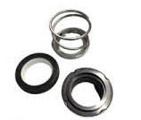
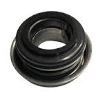
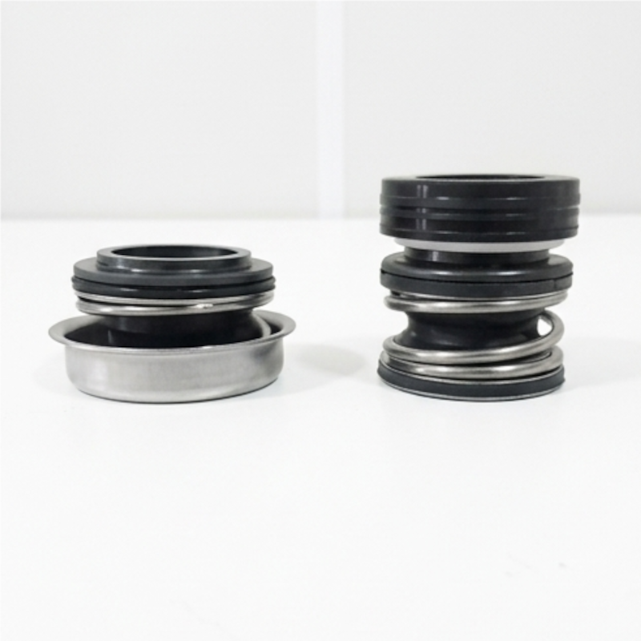
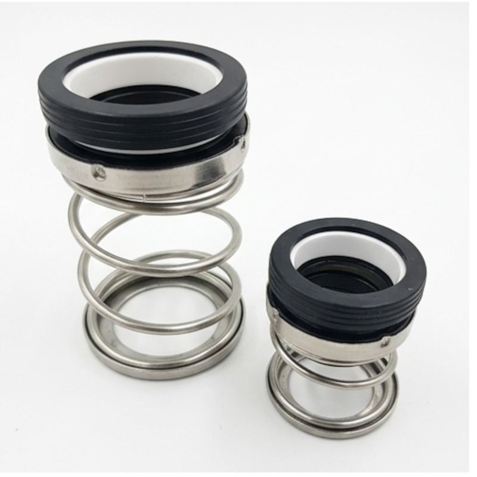
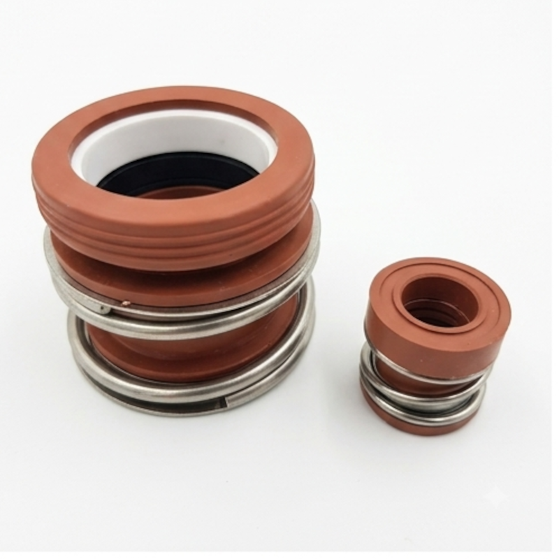
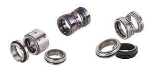

Selos Mecânicos Industriais
Os selos mecânicos são dispositivos de alta precisão projetados para eliminar vazamentos de fluidos em equipamentos rotativos, como bombas centrífugas, reatores e agitadores. Substituindo com superioridade as gaxetas tradicionais, garantem estanqueidade absoluta, menor atrito e maior vida útil aos componentes mecânicos operando em condições severas de pressão, temperatura e corrosão.
Variações Disponíveis

Selo Mecânico Monomola
Desenvolvido com mola única helicoidal, ideal para aplicações gerais em água, óleos e fluidos limpos. Design robusto e não obstruível, garantindo excelente desempenho e fácil instalação em bombas industriais leves e de médio porte.
Solicitar Cotação
Selo Mecânico Multimolas
Possui distribuição uniforme de carga sobre as faces de vedação através de múltiplas molas periféricas. Indicado para altas rotações, compressores e aplicações que exigem compensação precisa de desalinhamentos axeis.
Solicitar Cotação
Selo Mecânico Cartucho
Unidade pré-montada de fábrica que elimina erros de alinhamento e medição durante a instalação. Proporciona máxima confiabilidade, agilidade na manutenção preventivas e segurança operacional em processos críticos.
Solicitar Cotação
Selo Mecânico Fole de Borracha
Utiliza um elastômero em formato de fole para vedação secundária e arraste mecânico do eixo. Absorve vibrações e desalinhamentos, protegendo o eixo contra desgaste mecânico e travamentos por impregnação.
Solicitar Cotação
Selo Mecânico Fole Metálico
Projetado para resistir a temperaturas extremas e meios altamente agressivos sem o uso de elastômeros dinâmicos. Excelente resistência térmica e química para setores petroquímicos, alimentícios e farmacêuticos.
Solicitar Cotação
Selo Mecânico Duplo
Configuração de dupla vedação projetada para trabalhar com fluido de barreira ou de lavagem. Máxima segurança no manuseio de fluidos tóxicos, inflamáveis, abrasivos, voláteis ou cristalizáveis.
Solicitar CotaçãoFicha Técnica Geral - Selos Mecânicos Industriais
| Especificação | Detalhes |
|---|---|
| Faces de Vedação (Pares): | Carbeto de Silício (SiC), Carbeto de Tungstênio (TC), Grafite Impregnado, Cerâmica e Aço Inoxidável. |
| Elastômeros Secundários: | Viton (FKM), EPDM, Borracha Nitrílica (NBR), FFKM (Kalrez) e PTFE / Teflon Envelopado. |
| Partes Metálicas: | Aço Inoxidável AISI 304, AISI 316, Hastelloy e Ligas Especiais. |
| Faixa de Temperatura: | -40°C a +280°C (conforme a combinação de materiais e elastômeros escolhida). |
| Pressão de Trabalho: | Vácuo até 25 bar (modelos simples) / Até 80 bar (modelos cartucho balanceados). |
| Velocidade Periférica: | Suporta até 25 m/s de velocidade dinâmica no eixo. |
| Aplicações Típicas: | Bombas centrífugas, bombas submersas, agitadores, misturadores, reatores químicos, compressores e refinarias. |
| Normas Atendidas: | EN 12756 (antiga DIN 24960), API 682, ISO 3069 e diretivas RoHS. |